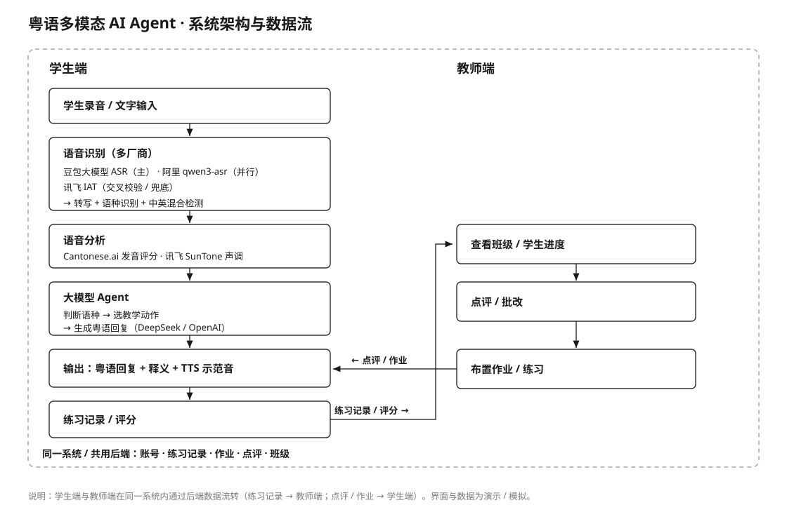
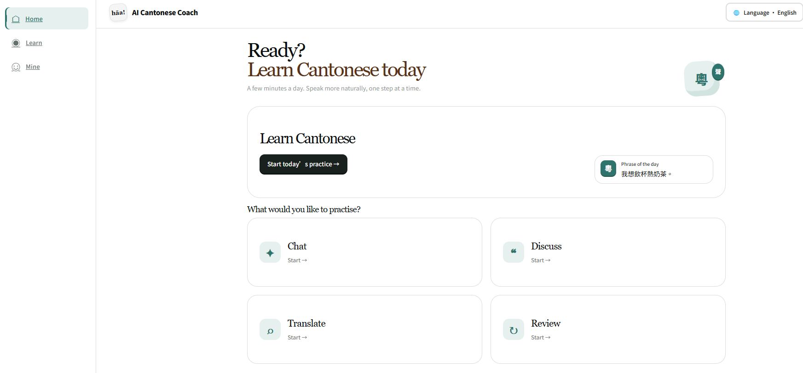
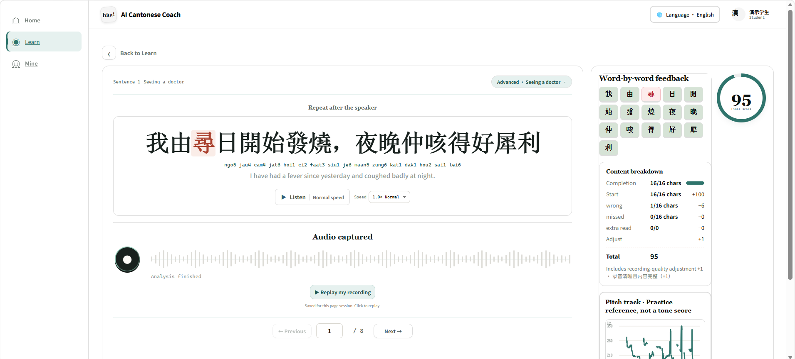
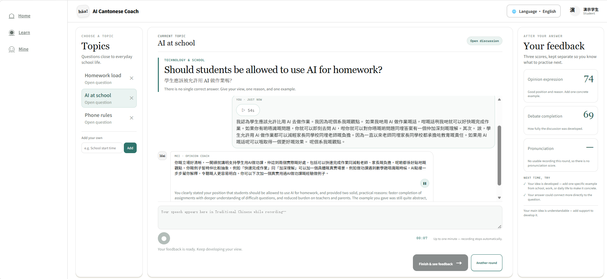

粤语多模态 AI Agent POC（面向香港政务 / 公共教育场景 · 政企项目）
政企 · 0→1 交付
实习单位
广州市科传计算机科技股份有限公司 · AI 实习生（2026.08 – 至今）
角色定位
作为 2 人项目组主力，主导核心链路：独立完成 3 家 ASR/TTS 接入调优、成本测算与客户演示
项目简介
把「粤语学习 × AI」从想法做成能演示、能落地的政企产品。面向香港政务 / 公共教育场景，主导搭建粤语多模态 AI Agent POC，整合 ASR、TTS 与大模型 Agent 能力，打通学生端 + 教师端全链路，完成本地联调与公网部署。
我的职责
- 端到端主导：从需求拆解、方案设计与技术选型，到集成开发、部署上线、客户演示，全程负责
- 独立完成 3 家 ASR/TTS 厂商 API 接入与参数调优，攻克粤语识别、中英混合语言检测等落地难点
- 设计与实现 AI 教练的 Agent 教学逻辑：实时判断学生语种与表达，自动选择教学动作（持续引导回粤语 / 自然纠错 / 开启新话题），实现个性化陪练
- 设计成本与调用控制：自由聊天按 8 小时窗口限制最多 50 轮，翻译 / 查词按 1 小时窗口设 30–100 次配额，配合发音评分结果缓存与超限自动收尾，控制大模型与语音 API 的 token / 调用成本
- 基于客户方提供的真实使用场景参数（目标用户规模 × 使用频次），完成日常 / 峰值双负载的 token 成本测算（覆盖周 / 月 / 年三维度），支撑客户采购决策
- 打通学生端与教师端，交付完整的学习闭环产品（学习数据经 PostgreSQL 持久化），而非单点 Demo
- 代表项目对公司领导汇报、对客户方进行 POC 演示，推动项目从内部验证走向市场
- 协同团队排查接口、部署与模型调用异常，输出可对外演示的 POC 原型
技术实现
ASR / TTS多厂商语音接入（豆包 / 阿里 / 讯飞）粤语识别 / 中英混检简繁归一（OpenCC）大模型 Agent（语种自适应调度）成本 / 调用控制Web / Node.jsPostgreSQL公网部署
项目亮点
- 入职 3 周内完成 POC 上线部署，并具备对外演示能力
- 从 0 到 1 进入客户采购评估/招投标流程 —— 项目走向商业化的关键一步
- 独立承担学生端开发、教师端整合与全部对外演示
项目价值
完整走通「需求拆解 → 集成 → 部署上线 → 客户演示 → 推动采购」的政企 AI 交付链路，证明的不只是「会写代码」，而是「能独立把 AI 项目落地并推向市场」。

产品能力：ASR 语音识别 · LLM Agent 调度 · TTS 语音合成 —— 面向粤语学习的多模态应用。



保密说明
因涉及政企项目，本页为脱敏描述；界面截图为演示环境、数据均为模拟，不含客户名称与真实数据。